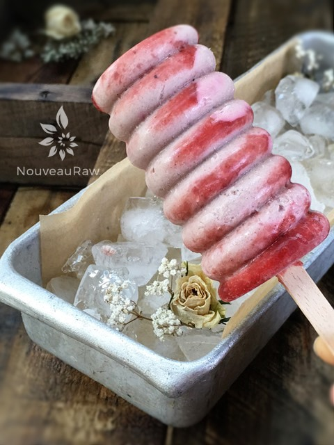

Aged Balsamic and Strawberry Ice Cream

~ raw, vegan, gluten-free ~
Ice cream? Really, during the winter? Shame on you for being prejudiced! Ice cream can and should be enjoyed year-round. :) Besides, eating ice cream in the winter is a bulletproof excuse to snuggle up in your sweetheart’s arms.
I lived most of my life in Alaska and trust me; the blistering cold doesn’t slow the locals down from enjoying ice cream. Been there, done that, got the t-shirt and donated it to Goodwill. I had enough of the Alaskan weather for a lifetime. :)
So, go ahead, get that parka on, slip on those mukluks, adorn that head of yours with that hat Great Grandma knitted for you (you know the one with pompoms on it) and get busy making this recipe!
This ice cream is light and refreshing. The deep richness of the balsamic syrup being ribboned throughout the ice cream gives it the perfect balance of flavor. I do realize that balsamic vinegar isn’t raw, but personally, I am ok with that. If you are adhering to a 100% raw diet, you can just omit and have a delicious strawberry ice cream.
To create a successful batch of ice cream, please be sure to start with ripe strawberries. After all, they are the main attraction in this recipe. You will also want to make sure that you blend the mixture to a smooth and creamy texture. Cashews can leave the batter grainy if you don’t blend them all the way through.
I always like to take part of the recipe batter and divide it up into fun ways to serve it. One night Bob gets a scoop of ice cream in a bowl, the next he gets a Lollie (popsicle). It just a little spice to life. I hope you enjoy this recipe. Many blessings, amie sue
yields 1 quart
- 2 cups raw cashews, soaked 2+ hours
- 3 cups organic sliced strawberries, divided
- 1 cup raw almond cream/milk
- 2/3 cup raw coconut nectar or (10 dates + 1/4 cup maple syrup)
- 3 Tbsp balsamic vinegar
- 1/8 tsp Himalayan pink salt
Preparation:
- Place the cashews in a glass bowl, along with 4 cups of water.
- Soak for at least 2 hours. Read more about why (here).
- The soaking process will help reduce phytic acid, which will aid in digestion.
- The soaking also softens the cashews, so they blend nice and creamy.
- After the cashews are through soaking, drain, and rinse.
- When I made the almond milk I used the following ratio: 1 cup almonds + 1.5 cups water + 2 dates
- In the blender combine 1 cup of strawberries along with the balsamic vinegar. Pour into another container and set aside.
- Save 1/2 cup of sauce to drizzle on top when serving.
- In a high-powered blender combine the cashews, almond milk, sweetener, and salt. Blend until the mixture is smooth in texture.
- Due to the volume and the creamy texture that we are going after, it is important to use a high-powered blender. It could be too taxing on a lower-end model.
- Blend until the filling is creamy smooth. You shouldn’t detect any grit. If you do, keep blending.
- This process can take 2-4 minutes, depending on the strength of the blender. Keep your hand cupped around the base of the blender carafe to feel for warmth. If the batter is getting too warm. Stop the machine and let it cool. Then proceed once cooled.
- Add the strawberries and blend.
- Place the blender container in the freezer for 1 hour to chill.
- Then finish the ice cream according to the manufacturer’s instructions that comes along with your ice cream machine.
- When placing the ice cream in a freezer-safe container(s), drizzle the strawberry sauce on the ice cream and swirl it around with a spoon.
- Enjoy as a soft-serve or place in the freezer. Eat within 1 month.
Freezing Suggestions for Ice Cream:
- Use an ice cream machine. Follow the manufactures directions.
- Freeze in popsicle molds or 3 oz Dixie cups with a popsicle stick inserted.
-
- Store the ice cream in the very back of the freezer, as far away from the door as possible. Every time you open your freezer door you let in warm air. Keeping ice cream way in the back and storing it beneath other frozen-sold items will help protect it from those steamy incursions.
- Ice cream is full of fat, and even when frozen, fat has a way of soaking up flavors from the air around it—including those in your freezer. To keep your ice cream from taking on the odors, use a container with a tight-fitting lid. For extra security, place a layer of plastic wrap between your ice cream and the lid.
- To soften in the refrigerator, transfer ice cream from the freezer to the refrigerator 20-30 minutes before using. Or let it stand at room temperature for 10-15 minutes.
- Wish to make your own raw ice cream, wonder what machine I might recommend, and more? Click (here) to check out the Reference Library!

© AmieSue.com